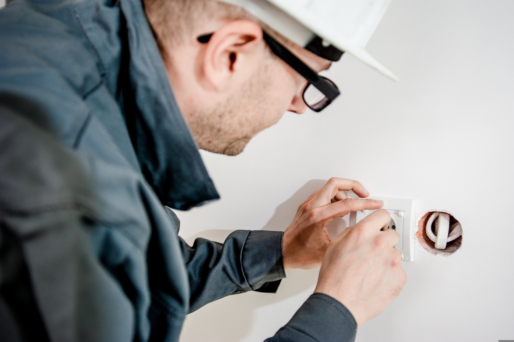

Manchester and surrounding areas
Our Electrical Services
VLP Electricals Ltd provides a range of electrical services for homes and businesses across Manchester and the surrounding areas.
Explore our services below to find out more about how we can help with your electrical requirements.
Request a QuoteExplore Our Services
Select a service to find out more.
Electrical Installations
Whether you are improving your home or making changes to a business property, electrical installations need to be carefully planned and carried out.
VLP Electricals Ltd offers electrical installation services to meet different property and customer requirements.
Get in touch to discuss your installation project and the work you require.
Enquire About RewiringElectrical Repairs
Electrical problems can affect the safety, comfort and everyday use of your property. Identifying and addressing faults is important.
VLP Electricals Ltd offers electrical repair services for a range of problems in residential and business properties.
Whether you are experiencing faulty electrical equipment, damaged fittings or other electrical issues, get in touch to discuss the problem.
Enquire About RewiringElectrical Fault Finding
Electrical faults are not always easy to identify. Recurring problems can sometimes indicate an underlying issue with an electrical installation or equipment.
Common warning signs include:
- Frequently tripping circuit breakers.
- Lights that flicker or dim unexpectedly.
- Electrical sockets or switches that stop working.
- Unusual buzzing sounds from electrical equipment.
- Electrical equipment that repeatedly loses power.
Fault finding helps identify the source of an electrical problem so that appropriate action can be considered.
Enquire About RewiringLighting Installation
Good lighting can improve the appearance, functionality and atmosphere of a property.
VLP Electricals Ltd offers lighting installation services for customers looking to install new lighting or update existing lighting arrangements.
Whether you are considering indoor lighting, outdoor lighting or upgrading existing fittings, get in touch to discuss your requirements.
Enquire About RewiringElectrical Maintenance
Electrical maintenance plays an important role in helping to keep electrical installations operating safely and reliably.
Over time, electrical systems and equipment can experience wear, damage or deterioration. Addressing concerns early can help prevent further problems.
Contact VLP Electricals Ltd to discuss your electrical maintenance requirements.
Enquire About RewiringElectrical Rewiring
Electrical wiring can deteriorate over time, particularly in older properties. An outdated electrical installation may require inspection and, in some cases, rewiring.
Possible signs that wiring needs attention
-
Frequent Circuit Breaker Trips
Regularly tripping breakers may indicate an overloaded circuit or an electrical fault.
-
Flickering or Dimming Lights
Persistent flickering or dimming can indicate an underlying electrical problem.
-
Outdated Wiring Systems
Older wiring systems may need inspection to establish whether they remain suitable for the property's electrical requirements.
-
Burning Smells or Discoloured Outlets
Burning smells, scorching or discolouration around sockets and switches can indicate dangerous overheating.
These warning signs do not automatically mean a property needs rewiring, but they should be investigated by a qualified electrician.
Enquire About RewiringFuse Board Replacement
The fuse board, also known as a consumer unit, is an important part of a property's electrical installation.
Older consumer units may need an assessment to determine whether an upgrade or replacement is appropriate.
A suitable modern consumer unit can provide updated circuit protection, depending on the design and equipment installed.
Contact VLP Electricals Ltd to discuss your fuse board replacement requirements.
Enquire About RewiringNeed an Electrician in Manchester?
Whatever your electrical requirements, contact VLP Electricals Ltd to discuss the work you need.